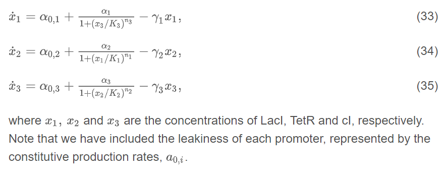
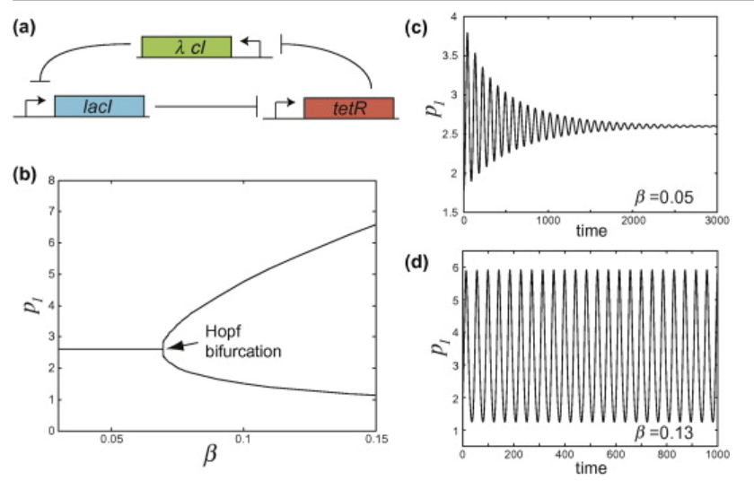
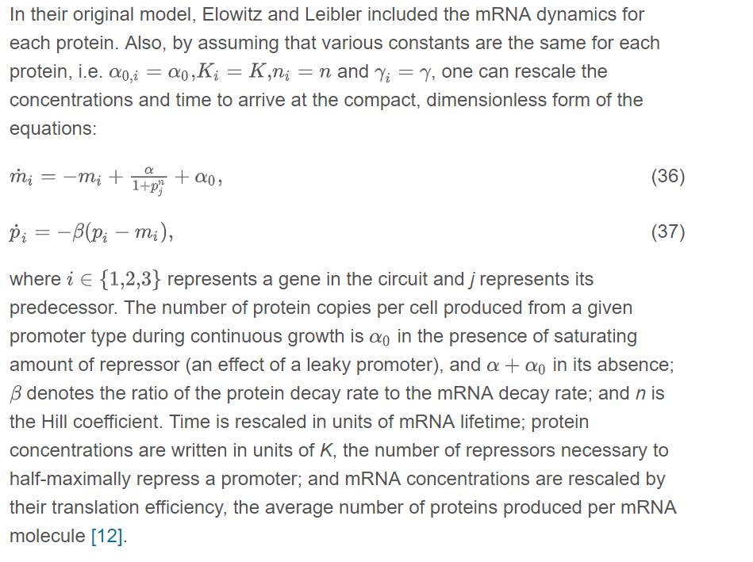
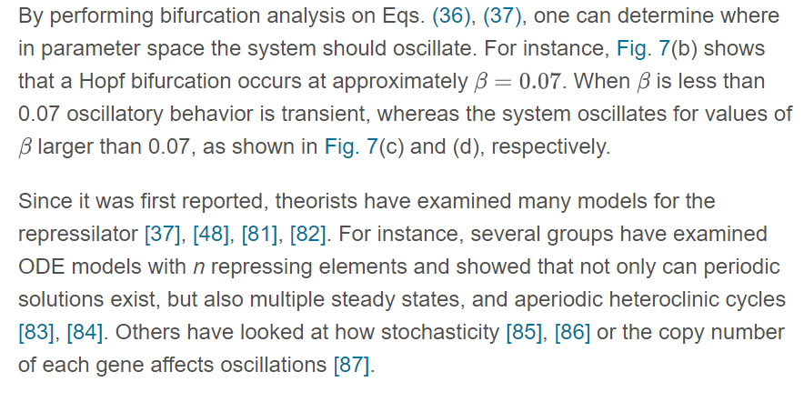
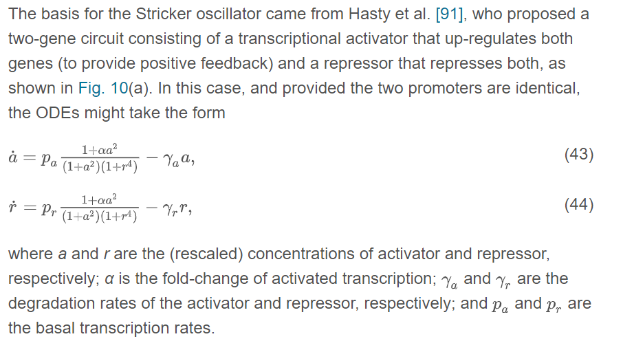

Equations and explanations from ‘Modeling synthetic gene oscillators
27th October 2018




Dual Feedback - probably too complicated/ineffective to bother with as it makes too many assumptions

Source: Modeling synthetic gene oscillators, O'Brien et al.